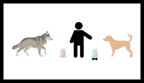

Publications and Posters

(2023) Response to Hansen Wheat et al.: Additional analysis further supports the early emergence of cooperative communication in dogs compared to wolves raised with more human exposure
Hannah Salomons, Kyle C.M. Smith, Megan Callahan-Beckel, Margaret Callahan, Kerinne Levy, Brenda S. Kennedy, Emily Bray, Gitanjali E. Gnanadesikan, Daniel J. Horschler, Margaret Gruen, Jingzhi Tan, Philip White, Bridgett M. vonHoldt, Evan MacLean, and Brian Hare
Further analysis supports the early emergence of cooperative communication in dogs compared to wolves.
(2021) Cooperative communication with humans evolved to emerge early in dogs
Hannah Salomons, Kyle C.M. Smith, Megan Callahan-Beckel, Margaret Callahan, Kerinne Levy, Brenda S. Kennedy, Emily Bray, Gitanjali E. Gnanadesikan, Daniel J. Horschler, Margaret Gruen, Jingzhi Tan, Philip White, Bridgett M. vonHoldt, Evan MacLean, and Brian Hare
Domestication altered dogs’ developmental pathways to enhance their cooperative communication with humans.

(2016) Parasite risk influences the water preferences of lemurs
Caroline R. Amoroso, Kyle C.M. Smith, Alexa G. Frink, Charles L. Nunn
Lemurs possess parasite avoidance strategies, including possibly disgust, that assist in avoiding contaminated water.